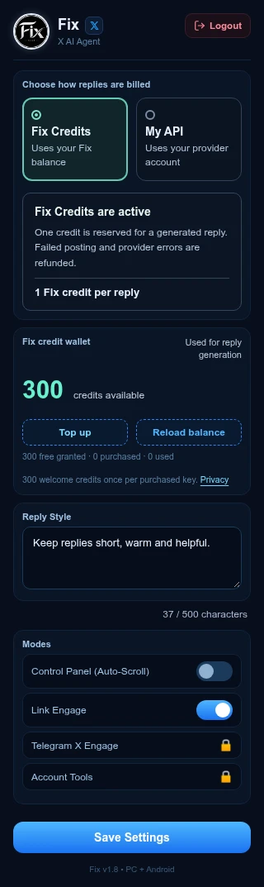
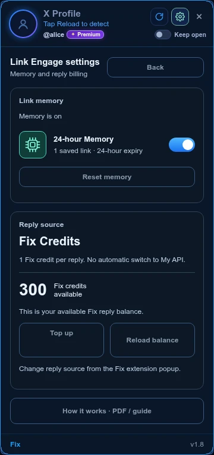

2026-10-13 · v1.7 update in preparation
Credits, link memory and more choice
Chrome Web Store currently serves v1.6. These v1.7 features become available after the new extension is approved and installed. Server-side credit and referral features are rolling out separately.
Choose how you reply
Select Fix Credits or My API. Your own API stays supported. Every purchased key receives 300 welcome credits once. Topups start at 500, with exact amounts, username checks and one-use payment verification.

Link Engage remembers for 24 hours
Find Links removes duplicate status IDs, links from your own username and previously attempted links in memory. Both completed and failed attempts are saved. Queue Reset does not clear memory. Expired entries are removed when Find Links is used. Memory can be switched off or reset separately, and is stored locally per X account.

Like, comment, or both
Enable either action or both. You cannot switch both off. Like-only runs do not use reply credits. Delay fields now accept 0 seconds; page loading and verification still take time. Zero delay is not a safety guarantee and may increase rate-limit risk. Default delays remain unchanged.
Less navigation
Optional Home and Back navigation runs after groups of 3, 4, 5, 6 or 9 processed links rather than every link. This changes navigation frequency, not platform rules or account safety.
Keep your prompt focused
Reply Style supports up to 500 characters. The settings panel displays a live counter.
Referral rewards with owner review
Create a link with your BEP20 wallet address. The wallet address is not part of the link. Signups start as pending. A first bot purchase qualifies for a $1 reward, subject to anti-abuse review. Telegram Confirm approves a payout; the dashboard does not label it paid until a transfer is confirmed. Wallet transfers are not active during setup.